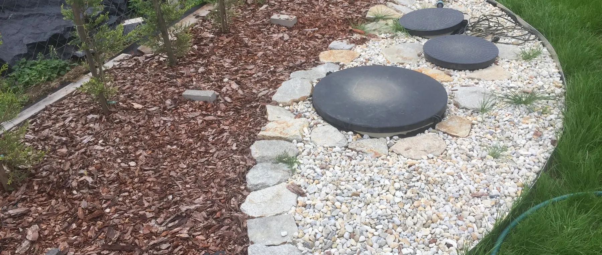

Családi házhoz keresek rendszert
Ez a leggyakoribb helyzet: adott a ház, ismert a háztartás létszáma, és a kérdés az, melyik megoldás való ide. A választást négy dolog dönti el — a telek, a terhelés, a kezelt víz sorsa és az engedélyezési feltételek. Ezeket vesszük végig sorrendben.

Választás
Megoldástípus kiválasztása
A sorrend nem tetszőleges: a telek adottságai szűkítik a kört, és csak azon belül van értelme technológiát választani.
-
Először a kezelt víz elhelyezése. Ha nincs hová elhelyezni a tisztított vizet, a berendezés kiválasztása értelmetlen. Talajba szikkasztás, felszíni befogadó vagy hasznosítás — legalább az egyiknek működnie kell.
-
Utána a technológia. Állandó lakhatásnál a biológiai berendezés a leggyakoribb választás, mert kisebb területen és jobb kimeneti minőséggel dolgozik. Az oldómedence ott jön szóba, ahol jó vízáteresztő talajon van elég hely a szikkasztómezőnek.
-
Végül a kapacitás. A méretezés a mértékadó terhelésre történik, nem az átlagra — a bejelentett létszám és a várható csúcs együtt adja meg.
-
És minden lépésnél az engedélyezési feltételek. Ezek településenként eltérnek, és felülírhatják a műszakilag egyébként jó megoldást.
Telek
Telekalkalmasság
Meglévő háznál a telek egy része már beépített, ezért a szabad felület elhelyezkedése is korlát. Négy dolgot érdemes megnézni.
-
Szabad, megközelíthető felület. A berendezés telepítéséhez gép kell, a későbbi iszapelszállításhoz szippantóautó. Ha a kiszemelt hely nem megközelíthető, az évtizedekre megdrágítja az üzemeltetést.
-
Talaj és talajvíz. A vízáteresztő képesség és a mértékadó talajvízszint dönti el a vízelhelyezés módját és a szükséges területet.
-
Védőtávolságok. Ásott és fúrt kutak — a sajátja és a szomszédoké is —, telekhatárok és épületek együtt jelölik ki a beépíthető sávot.
-
A meglévő bekötés nyomvonala és mélysége. Ez dönti el, hogy gravitációsan megoldható-e a bekötés, vagy átemelő is kell hozzá.
Méretezés
Kapacitás és létszám
A kapacitás nem a ház alapterületéből, hanem a tényleges terhelésből következik. A méretezés alapja a háztartás létszáma és a fajlagos vízfogyasztás, kiegészítve a várható ingadozással.
Érdemes előre gondolni: ha a család bővülhet, vagy rendszeresen fogadnak vendéget, azt a méretezésnél kell figyelembe venni. Az utólagos bővítés lényegesen drágább, mint az induláskor egy fokozattal nagyobb kapacitás.
Ugyanakkor a jelentősen túlméretezett rendszer sem előnyös: a biológiai folyamat a tényleges terheléshez igazodik, és a tartósan alacsony terhelés a hatásfokot is befolyásolja. A cél nem a legnagyobb, hanem a mértékadó terheléshez illő berendezés.
Költség
Költség és telepítés
A végösszeget ritkán a berendezés ára mozgatja leginkább. Az alábbi tételekkel érdemes számolni, mert ezek adják a különbséget két látszólag azonos projekt között.
-
Földmunka. A gödör mérete, a talaj kötöttsége és a kitermelt föld elhelyezése — sziklás vagy nagyon kötött talajon ez jelentős tétel.
-
A bekötés mélysége és hossza. Mély bekötésnél átemelőre lehet szükség, ami beruházási és üzemeltetési költséget is jelent.
-
A kezelt víz elhelyezése. A szikkasztómező kiépítése vagy a befogadóig vezető szakasz — talajtípustól és távolságtól függően eltérő nagyságrend.
-
Elektromos bekötés. A berendezéshez áram kell; ha a telepítés helye messze van az elosztótól, a kábelezés is költség.
-
Engedélyezés és dokumentáció. Mértéke a megoldástípustól és a helyi előírásoktól függ.
-
Üzemeltetés. Áramfogyasztás, időszakos iszapelszállítás és karbantartás — ezek nélkül a megoldások nem hasonlíthatók össze.
Gyakori kérdések
Amit a leggyakrabban kérdeznek
Mekkora helyet foglal el a berendezés a kertben?
A berendezés maga a föld alá kerül, a felszínen csak az aknafedlapok látszanak, így a kert használható marad. A területigényt nem a tartály, hanem a kezelt víz elhelyezése határozza meg — szikkasztómezőnél ez lényegesen nagyobb felület.
Hallható vagy szagol a rendszer?
Rendeltetésszerű üzemben nem. A levegőztetést végző kompresszor halk, és jellemzően védett helyre kerül. A szag mindig jelzés: eltömődésre, elmaradt iszapürítésre vagy meghibásodásra utal, ezért ilyenkor szervizt kell hívni.
Mennyi az áramfogyasztása?
A folyamatosan üzemelő kompresszor fogyasztása adja, ami a berendezés méretétől függ. A konkrét értéket a kiválasztott modell adatlapja tartalmazza; ezt az ajánlatban a várható éves üzemeltetési költséggel együtt adjuk meg.